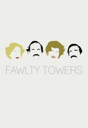

")
Alternativ: Fawlty Towers
Auszeichnungen: 2 BAFTA-Awards gewonnen
 
 IMDB-Wertung: 8.8 / 10
IMDB-Wertung: 8.8 / 10  Metascore:
Metascore: 
Basil Fawlty ist ein gestresster Hotelmanager, dessen Leben durch seine ständig nörgelnde Frau, Wirtschaftskontrolleure, Erpressungsversuche oder tote Gäste gestört wird. Er ist hypernervös, überreizt, arrogant und sadistisch. Sybil ist seine bissige Ehefrau. Ihr berühmter Schrei "Basil!" treibt Basil ständig auf die Palme, ebenso wie das klagende "Que?" des spanischen Trainee-Kellners Manuel. Das Zimmermädchen Polly dagegen ist charmant, ruhig und kompetent - also eigentlich völlig fehl am Platze.
Jahr: 1975
Dauer: 30 Minuten
FSK:
Land: England Studio: BBCTonspuren: DD2.0 - ,
Untertitel:
Auflösung: SD (720x554) Größe: 337 MB
Regisseur: Bob Spiers, John Howard Davies
Drehbuch: Connie Booth, John Cleese
Soundtrack:
Darsteller:
 John Cleese als Basil Fawlty
John Cleese als Basil Fawlty Andrew Sachs als Manuel
Andrew Sachs als Manuel Bernard Cribbins als Mr. Hutchinson
Bernard Cribbins als Mr. Hutchinson Geoffrey Palmer als Dr. Price
Geoffrey Palmer als Dr. Price David Kelly als O'Reilly
David Kelly als O'Reilly Allan Cuthbertson als Colonel Hall
Allan Cuthbertson als Colonel Hall Claire Davenport als Mrs. Wilson
Claire Davenport als Mrs. WilsonDatei: X:\HD-Serien\Fawlty Towers\Fawlty Towers S01E00 Extra Exklusivinterview mit Andrew Sachs.mkv seit 10.03.2016
Festplatte: HD Serien(A-H)
 Es gibt insgesamt 182 Filme in der Gruppe 'HD-Serien'
Es gibt insgesamt 182 Filme in der Gruppe 'HD-Serien'